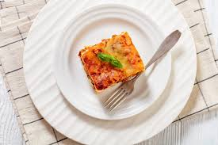

Lasagna

Homemade and delicious lasagna
This lasagna is made with zucchini slices instead of pasta. This low-carb, gluten-free beef lasagna
is delicious and satisfying; it's a crowd-pleaser!
Ingredients:
- Tomato Sauce
- Minced Meat
- Onions
- Pasta for lasagna
- Milk & nutmeg
- Starch
Steps:
- Heat a sauce pan with olive oil inside
- Brown onions in
- Pour & stir the minced meat to slightly cook it
- Pour tomato sauce and let it reduce on low heat
- Heat milk with nutmeg, pour starch in at boiling point, reduce fire and stir till thickened
- First spread pasta slices in a dish, then tomatoes sauce then bechamel etc, and voila!!!